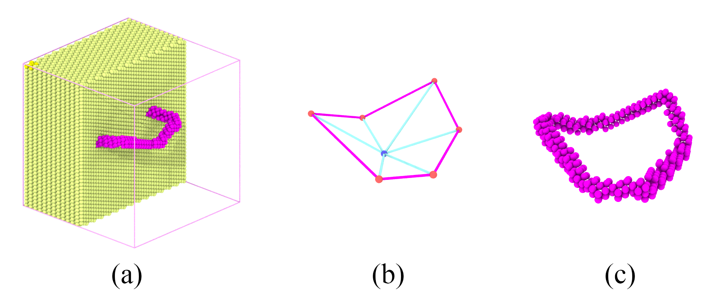

8.7. 3D dislocation loop


( a ) a single crystal BCC Fe sample with a dislocation loop. ( b ) Triangulation mesh grid of a surface in 3D space, and the pink profile of the surface represents the geomerty of a 3D dislocaiton loop. ( c ) The 3D dislocaiton loop in ( a ) was constructed based on geomertrical surface in ( b ).
Similar to dislocation helix, by using a mesh grid data file and the ‘nHelix’ tag, we could construct general 3D dislocation loop (i.e., segments of the same dislocation do not have to be located on the same crystalline slip plane) in crystal as shown in the above figure. The steps are given as follows:
Step 1:
Use the tool in the subdirectory tools/Bcc to creat an BCC single crystal sample by running the following command in Terminal. This will produce an ASCII text file of the atomic structure in current directory:
bcc_reg.lmp. Use the tool in the subdirectory tools/Surf_3d to to create the mesh of a 3D surface:surf_3d.mesh. Also, you can write your own data file of mesh grid based on the desired dislocation geometry, but shoud use the same data format as explained below.
1#bash
2Bcc 100 100 100 -x 1 -1 0 -y 1 1 -2 -z 1 1 1 Fe
3
4#bash
5Surf_3d -c 0 0 0 25 6 13
Mesh data file
Content of data file surf_3d.mesh:
16
2 0.000000 0.000000 0.000000
3 28.316080 4.267695 11.301374
4 3.250863 29.255168 4.181336
5 0.000000 0.000000 0.000000
6 3.250863 29.255168 4.181336
7-21.104273 31.585975 11.602512
8...
In the mesh data file, first line is the number of total triangular mesh grid. From the second line, the vertex x-, y-, and z-coordinates of each triangular mesh grid are printed line by line. The vertex ordering of a triangular mesh grid are determined by the direction of its face normal according to the right-hand rule.
Step 2:
Open terminal, run the following command:
1#bash
2CryDisGen para_file bcc_reg.lmp
Parameter file
Content of the para_file:
1#lines starting with '#' are comments
2#crystal region definition
3Region
4-x 1 -1 0 # lattice orientation along x-axis
5-y 1 1 -2 # lattice orientation along y-axis
6-z 1 1 1 # lattice orientation along z-axis
7-lat 2.866 # lattice constant
8-pbc 1 1 1 # boundary condition flags along x/y/z-axes: '1' for periodic, '0' for non-periodic
9
10nHelix 1
11Helix
12-bvh 1 1 1
13-bsh 1/2
14-f surf_3d.mesh